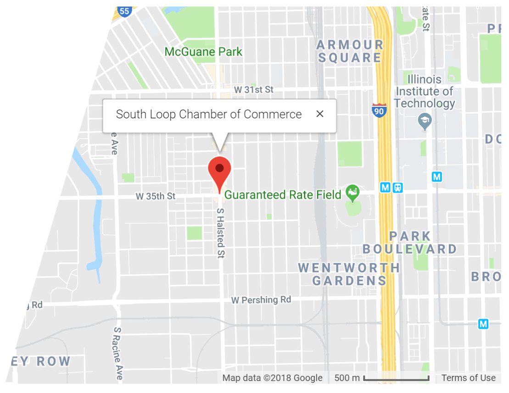

Contact
773-254-7225
Office Location
- 3538 S. Halsted St
- Chicago, IL 60608
Driving Directions
From Downtown (Richard J.Daley Center)
- Head West on Randolph St. - about 3 mins (go 0.8 mi)
- Turn left to merge onto I-90/I-94 E - about 5 mins (go 3.9 mi)
- Take exit 55A toward 35th St (go 0.2 mi)
- Merge onto S Wentworth Ave (go 322 ft)
- Turn right onto W 35th St - about 2 mins (go 0.8 mi)
- Turn left onto S Halsted St
- Destination will be on the right go 427 ft (total 5.8 mi.)
From the North (O'Hare Airport)
- Head Southeast - about 2 mins (go 0.5 mi)
- Take the ramp onto I-190 E - about 4 mins (go 3.0 mi)
- Merge onto I-90 E - about 20 mins (go 17.2 mi)
- Take exit 55A toward 35th St (go 0.2 mi)
- Merge onto S Wentworth Ave (go 322 ft)
- Turn right onto W 35th St - about 2 mins (go 0.8 mi)
- Turn left onto S Halsted St
- Destination will be on the right go 427 ft (total 21.8 mi.)
From the South (Midway Airport)
- Head north on S. Cicero Ave. - about 7 mins (go 2.3 mi)
- Turn right onto the Interstate 55 N/Stevenson Expy ramp to Chicago
- Merge onto I-55 N/Stevenson Expy - about 3 mins (go 2.9 mi)
- Take exit 290 toward Ashland Ave - about 48 secs (go 0.6 mi)
- Merge onto W 31st Pl - about 56 secs (go 0.4 mi)
- Turn right onto S Ashland Ave -about 2 mins (go 0.6 mi)
- Turn left onto W 35th St - about 3 mins (go 1.0 mi)
- Turn right onto S Halsted St.
- Destination will be on the right go 427 ft (total 8.5 mi)